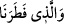
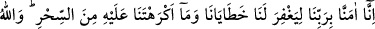
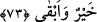
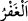

sonraya bırakılmasının sebebi şudur: Çünkü yaratanı bilmek aklî ve nazarî âyet iledir,
onun gördüğü ise hissî ve zâhir bir âyettir.
Bazıları şöyle derler: __WORD__ ifâdesinin, zikredilenlerin delâletinden de
anlaşıldığı üzere cevâbı hazf edilmiş bir kasem/yemindir. “Bizi yaratan Allah hakkı için
yemin olsun ki seni O’na tercih etmeyiz.” demektir.
Farsça tefsirde “Bizi yaratan Hudâ’ya yemin ederiz ki...” denir.
et-Te’vîlâtü’n-Necmiyye’de şöyle der: “Yâni, bizi İslam fıtratı üzere yaratana yemin
olsun ki…” Allâh’ın yaratıcı olduğunu ifâde etmeleri, onların Fir’avn’u Allah Teâlâ’ya
tercih etmemelerinin bir zorunluluk olduğunu bildirmek içindir.
“Öyle ise yapacağını yap!” Bu ifâde, hakikatleri gördükten sonra îmân edenlerin,
Fir’avn’un tehdidlerine karşı verdikleri vakûr cevabı anlatır. “Sizi asacağım...
Ellerinizi ve ayaklarınızı çapraz olarak keseceğim.” tehdidlerine karşı “Haydi durma,
ne yapacaksan yap. İster asılmamıza, ister organlarımızın kesilmesine hükmet, biz bu tür
tehdidlerden korkup da kararımızdan dönmeyiz.” diye cevap vermeleridir.
et-Te’vîlâtü’n-Necmiyye’de şöyle der: “Allâh’ın ezelde bizim için yazdığı şehâdete
hükmet ve onu bizim üzerimizde uygula.”
“Sen, ancak bu dünya hayatında hükmünü geçirebilirsin.” Yâni sen ancak bu dünya
hayatında ve sadece bizim hayatımız müddetince istediğini yapabilir veya uygun
gördüğün hükmü verebilirsin. Senin emrin ve hükümranlığın pek yakında yok olup
gider. Bizim artık dünyanın tatlısına/güzelliklerine bir rağbetimiz, azabından da bir
korkumuz kalmamıştır. Bugün sen ne zulüm istersen yap, yarın da sana Allah dilediği
cezâyı verir.
73. “Bize, hatalarımızı ve senin bize zorla yaptırdığın büyüyü bağışlaması için
Rabbimize îmân ettik. Allah, (mükâfatı) en hayırlı ve (cezası) en sürekli olandır.”
“Bize,” küfür ve isyandan oluşan “hatâlarımızı ve senin bize zorla yaptırdığın
büyüyü bağışlaması için Rabbimize îmân ettik” ki bu günahlardan ötürü bizi âhirette
hesâba çekmesin. Bizim îmanımız, fânî hayattan faydalanmak için değildir. Onun için
senin bizi asmak ve âzâlarımızı kesmekle tehdid etmen bize tesir etmez.
Mağfiret, günahlarının bağışlanması sebebiyle kulun hak ettiği azabdan korunmasıdır.
Bir nesneyi kirden ve lekeden koruyacak örtü ile kaplamak demek olan “__WORD__ kökünden
gelir.
“Senin bize zorla yaptırdığın büyüyü bağışlaması için Rabbimize îmân ettik” ki
senin bizi uzak şehirlerden toplayıp zorlamanla Mûsâ’ya karşı koymak üzere yaptığımız
sihirleri affetsin. Sihir onların hatâları içinde zâten bulunduğu halde ondan nefretlerini